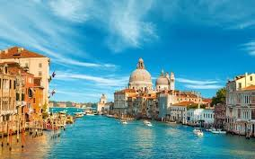

Giá từ: 62.000.000đ/người
🇮🇹 Ý – cái nôi của văn minh La Mã và nghệ thuật Phục Hưng – là điểm đến khiến trái tim bất kỳ ai cũng phải thổn thức.
Từ Rome cổ kính đến Florence nghệ thuật và Venice lãng mạn, mỗi thành phố đều mang trong mình một câu chuyện trăm năm.
Buổi sáng, dạo bước giữa đấu trường Colosseum – biểu tượng của đế chế La Mã hùng mạnh, nơi vang vọng tiếng quá khứ huy hoàng.
Buổi trưa, ghé Vatican – trung tâm tôn giáo và nghệ thuật của thế giới, chiêm ngưỡng bức bích họa “Sự sáng tạo của Adam” trong Nhà nguyện Sistine.
Buổi chiều, đến Venice – thành phố trên mặt nước, nơi những chiếc gondola lướt nhẹ qua kênh đào quanh co dưới ánh hoàng hôn vàng rực.
Buổi tối, du khách thưởng thức pizza Ý, spaghetti và espresso đậm vị – tận hưởng phong cách sống chậm rãi, tinh tế của người Ý.